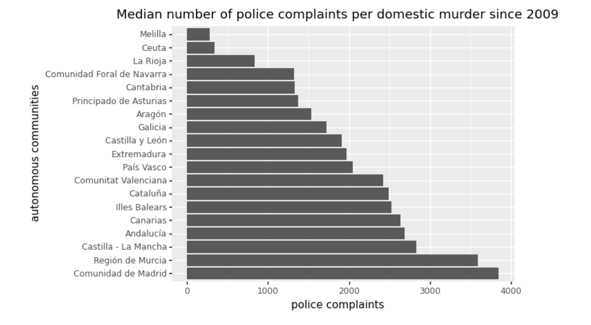

The silent epidemic: a dive into domestic homicides in Spain
Patricia Martínez Sastre
Some days ago, news outlets from my home country screamed blue murder after a 17-year-old girl was killed by her ex-boyfriend in Murcia, Southeastern region. A total of three women have already been murdered this 2022. And it's only February 18th.
In 2003 the Spanish Government started to collect data related to what was nationaly coined as "gender violence" or "sexist violence"; this is any kind of agression (physical, phycological, verbal, etc.) perpetrated against women mainly by an intimate partner, and anchored in an imbalanced system of male domination.
We dediced to analyze the number of sexist murders per 100,000 female residents, what allowed us to see how small territories,
like La Rioja or Cantabria register the highest rate of murders. Since 2003, ........
At the same time, we also explored the total number of police complaints since 2009, the year when that data started to be collected. Overall, the territories where more women are killed by an intimate partner also register some of the highest average number of complaints per year. But if we calculate the number of complaints per domestic murder (this is, how many complaints occur in a territory per each woman that ended up killed) the differences are enormous.
For instance, in Ceuta and Melilla *there is* a gender murder every 300 police complaints, while on the opposite side of the spectrum, in Madrid that happens after more than 3,800 reports to police, followed by Murcia with more than 3,500. In this two territories, we could say that there is a high level of behind-the-scenes domestic violence (according to the high number of police complaints) that fortunetly don't end up in killings.
Equally, more effort should be done by the local government and different strategies should be implemented in territories like Ceuta and Melilla, as well as the autonomous community of La Rioja, to better understand the real scale of sexist violence, since the number of police complaints seems underreported in relation to the number of killings.

A long way to go in police complaints
Firtly, we must say that most of those police complaints are made by the agents itself once they respond to a domestic violence call. Sadly, most women that suffer violence by an intimate partner do not report, which makes it harder to implement successful protection measures.
Since 2006, when this data was first available, around 27% of all 927 women killed had reported their partners to police.
Asturias have the worst percentage, with only 12% of women that had made a complaint. The highest percentage of complaints is hold by Extremadura where 4 out of 8 women had reported to police before been murdered. These numbers show that a police complaint doesn't always prevent another gender homicide.